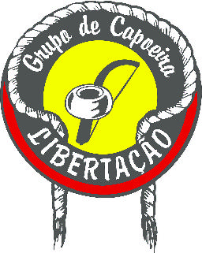
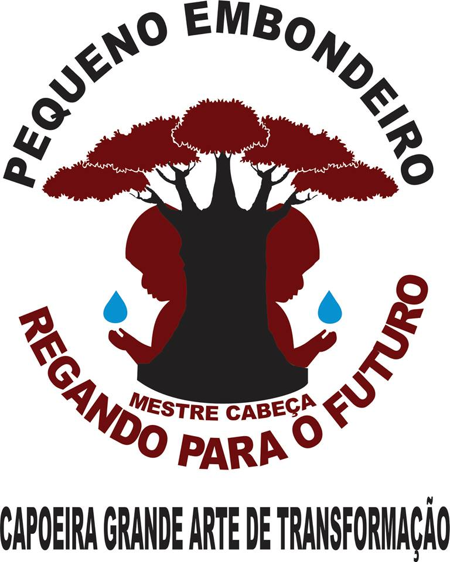
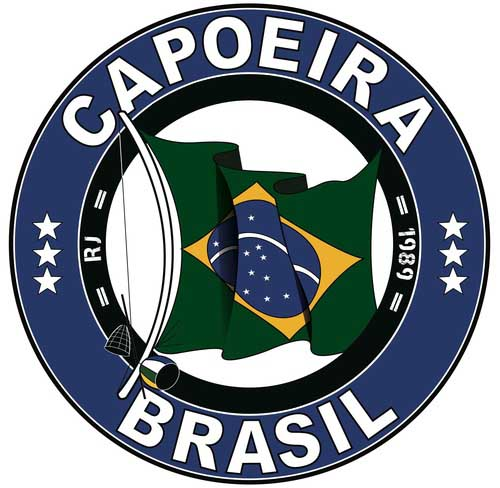
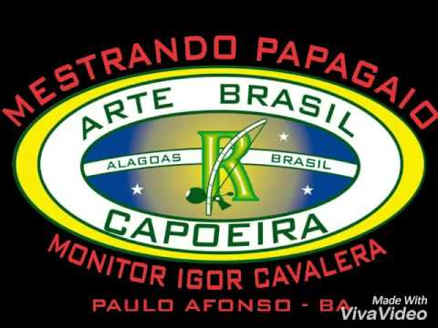
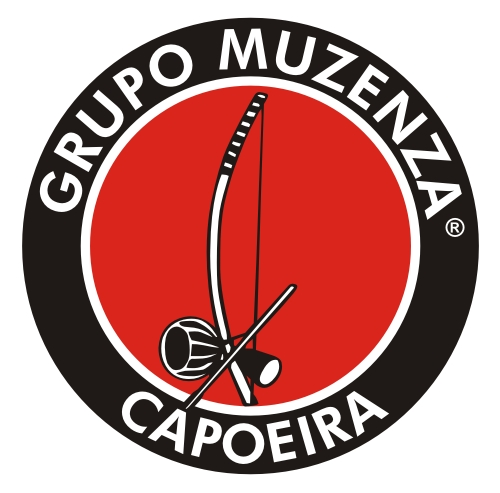
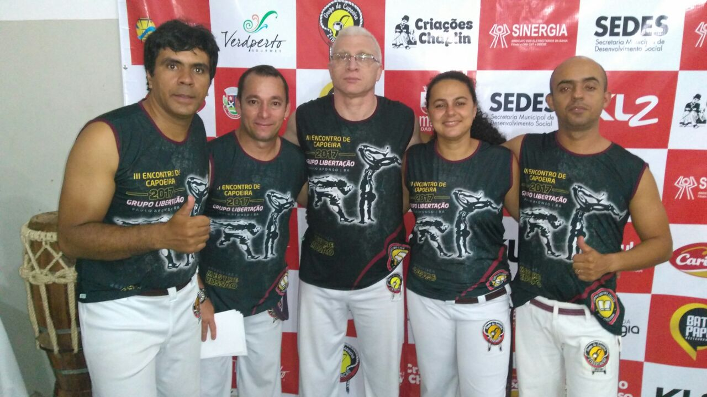

Existem diversos grupos de capoeira espalhados pelo mundo. Grupos fundados por brasileiros e por estrangeiros. A capoeira alcançou o mundo e vem crescendo cada dia mais.
Para explicar de forma mais resumida, segue abaixo um vídeo produzido pelo Contra Mestre Koioty, do grupo Herança de Zumbi, citando os Top 10 Melhores Grupos de Capoeira do Mundo.
Grupos de Capoeira em Paulo Afonso
A cidade de Paulo Afonso-BA conta com 5 grupos de capoeira, sendo eles:
|

Libertação |

Embodeiro |

Capoiera Brasil |

Art Brasil |

Muzenza |
Grupo de Capoeira Libertação
Da esquerda para a direita: Professor Pinguin (Alan Wilker), Professor Surfista (Anderson Andrade), Mestre Russão (Jurandir Pinheiro), Professora Sapeca (Joyce Ribeiro) e Professor Duzoi (Wescley).
O grupo de Capoeira Libertação foi fundado no dia 12/02/2004 , por Jurandir (Russão) – Mestrando em Capoeira e por seus alunos, Jéferson – Professor de Capoeira, José Luiz – Professor de Capoeira, Joadir – Professor de capoeira; formados e certificados em capoeira desenvolvem trabalhos na área social de nossa cidade, possuindo alunos de todas as faixas etárias e classes sociais.Com o passar do tempo o grupo, devido ao seu desenvolvimento e busca pelo conhecimento, expandiu sua área de atuação possuindo hoje trabalho social em Anchieta/ES; já tendo desenvolvido inclusive atividade em outro país como a Colômbia, sua experiência é internacional. Seu reconhecimento internacional é devido ao esforço de bravos atletas da capoeira que não medem esforços para divulgar os benefícios que esporte traz, inclusive divulgando também nossa língua entre estrangeiro, um fato extraordinário para nossa cidade.
Fonte: http://jdedicoes.wixsite.com/capoeiralibertacao/about_us